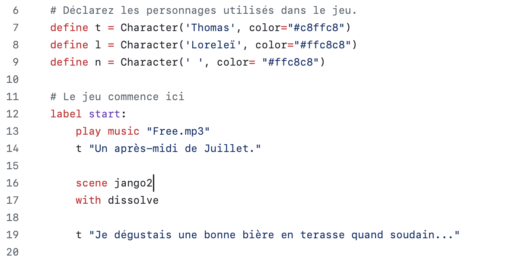

Ce projet est le projet 0. Alors que je n'avais aucune connaissance en code, j'ai décidé pour surprendre mon conjoint développeur de lui créer un jeu vidéo fait entièrement par mes soins afin de le demander en mariage. J'ai utilisé Ren'Py pour développer ce jeu, un framework de création de jeu en Python. C'est ce premier projet réalisé en Décembre 2023 qui me donnera l'envie de commencer une carrière de développeur en 2024.
Ce que j'ai appris sur ce projet :
- Rechercher de la documentation
- Créer un jeu avec Ren'Py
- Écrire et demander de l'aide à d'autres développeurs
- Partager mes connaissances et expériences lors d'un évènement
- Créer un jeu avec des boucles
